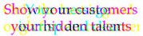

<canvas></canvas>
<br>
<button onclick="reveal()">
  Reveal!
</button>
<script>
  function init() {
    // Turn the page elements into Javascript objects
    img = document.querySelector('img');
    canvas = document.querySelector('canvas');
    context = canvas.getContext('2d');
    
    // Set the canvas size to the image size
    canvas.width = img.width;
    canvas.height = img.height;
        
    // Draw the image onto the canvas at the default origin point (upper-left corder)
    context.drawImage(img, 0, 0);
  }
  
  /*
   *  Drop an image's blue and green pixel values to 0. This will
   *  have a similar effect as using "Red Reveal" glasses.
   */
  function reveal() {
    // Grab pixel data from canvas
    imgData = context.getImageData(0, 0, canvas.width, canvas.height);
    
    /*
     * Image data objects contain 4 array elements per pixel, identifying color depths
     * for red, green, and blue, and then "alpha", or opacity. We want to zero out
     * green and blue, array indices 1 and 2 in each set
     */
    for (i = 0; i < imgData.data.length; i += 4) {
      imgData.data[i + 1] = 0;
      imgData.data[i + 2] = 0;
    }
    
    // Put the altered pixel data back on the canvas
    context.putImageData(imgData, 0, 0);
  }
</script>